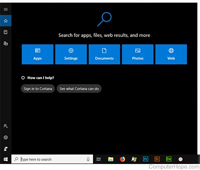
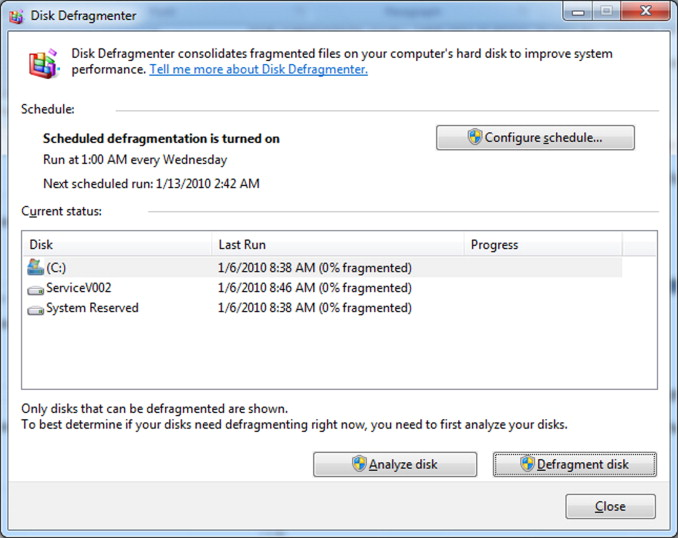

<!DOCTYPE html>
<html lang="en">
<head>
    <meta charset="UTF-8">
    <meta http-equiv="X-UA-Compatible" content="IE=edge">
    <meta name="viewport" content="width=device-width, initial-scale=1.0">
    <title>LAB REPORT</title>
</head>

</html>
<h3 align="center">
    <font face="lato" size = "8">LAB 1 REPORT</font>
</h3>
<body>

    <h1><font face="lato" size = "8"></font>1. What is the difference between GUI and CUI?</font></h1>


    <p><font face="lato" size = "5"> GUI </font> </p>

    >> GUI stands for graphical user interface. It is a user interface which user interact with applications by making use of graphics. In GUI more than one task can run simultaneously. The user interacts by pointing the applications using devices like mouse. It is a very user friendly interface.
    Example(Windows, Linux)

    <p><font face="lato" size = "5"> CUI </font></p>

    >> CUI stands for character user interface.

    In CUI user has to interact with the applications by making use of commands.
    
    In CUI only one task can run at a time.
    
    Additional information :-
    
    CUI and GUI are user interface used in connection with computers
    <p> 
        • CUI is the precursor of GUI and stands for character user interface where user has to type on keyboard to proceed. On the other hand GUI stands for Graphical User Interface which makes it possible to use a mouse instead of keyboard.</p>    
    <p>•
         GUI is much easier to navigate than CUI.</p>
    <p>•
         There is only text in case of CUI whereas there are graphics and other visual clues in case of GUI.</p>
    <p>•
         Most modern computers use GUI and not CUI.</p>
    <p>•
         DOS is an example of CUI whereas Windows is an example of GUI.</p>


    <h1><font face="lato" size = "8"></font>2.  What are the feature of Windows OS..?</font></h1>


    <p>>>> An Operating System (OS) is a software that acts as an interface between computer hardware components and the user. Every computer system must have at least one operating system to run other programs. Applications like Browsers, MS Office, Notepad Games, etc., need some environment to run and perform its tasks.</p>

    <p>Some of the features of windows Operating system (OS) are as shown below</p>

    <h2><font face="lato" size = "5"></font>1. Speed<font></h2>

    <p>>>> Even aside from incompatibilities and other issues that many people had with Vista, one of the most straightforward was speed – it just felt too sluggish compared to XP, even on pumped up hardware. Windows 7 brings a more responsive and sprightly feel and Microsoft has spent a lot of time and effort getting the Start Menu response just right.
        
        Microsoft has also recognized the need for improved desktop responsiveness, which gives the impression that the computer is responding to the user and that they are in control – something that was often lacking with Vista.
        
        You can also expect faster boot times. And the boot sequence is now not only prettier than it was with Vista, but it’s speedier too.</p>


        <h2><font face="lato" size = "5"></font>2. Compatibility <font></h2>

            <p>>>> In simple terms, compatibility on Windows 7 will be far better than it was with Vista. Many programs that individuals and companies used on Windows XP did not work immediately and required updates, but with Windows 7 almost all applications that work on Vista should still run.</p>


        <h2><font face="lato" size = "5"></font>3. Lower Hardware Requirements <font></h2>


            <p>>>> Vista gained a reputation for making even the beefiest hardware look rather ordinary. Windows 7, however, will run well on lower end hardware, making the transition from Window XP less painful.

                Microsoft is even pushing Windows 7 for netbooks. This could provide a modern replacement for Windows XP, which has found a new lease of life as the OS of choice on netbooks, supplanting Linux. The downside is that Windows 7 Starter Edition, as it will be called, will be limited to only three applications running at the same time.</p>


                <h2><font face="lato" size = "5"></font>4. Search and Organization <font></h2>

                     <p>>>> One of the best things about Windows 7 is the improved search tool, which now rivals Mac OS X’s Spotlight to be able to find what you need quickly and easily. For example, typing ‘mouse’ will bring up the mouse option within the control panel or typing a word will display it and split it up neatly into files, folders and applications.

                        Also introduced is the concept of Libraries, which takes the ‘My Documents’ concept a stage further. The various Libraries, such as Documents and Pictures, will watch multiple locations which you can add yourself, so you don’t have to keep everything in one place.</p>
                        
                <h2 align="left"><font face="lato" size = "6">#. CORTANA</font></h2>


                <p>>>> Cortana is a virtual assistant introduced in Windows 10 that accepts voice commands. Cortana can answer questions, search your computer or Internet, set appointments and reminders, perform online purchases, and more. Cortana has similarities to other voice-activated services, such as Siri, Alexa, or Google Assistant, with the added benefit that it can search the information on your computer.</p2>

                <h3 align="center"></h3>


                <h1><font face="lato" size = "8"></font>3.  How we can open a program in Windows OS..?</font></h1>


                <p>
                    >>> In Windows, to run a program, double-click the executable file or double-click the shortcut icon pointing to the executable file. If you have a hard time double-clicking an icon, you can click the icon once to highlight it and then press the Enter key on the keyboard.Your program will be execute.
                </p>


                <h1><font face="lato" size = "8"></font>4.  How we can turn off the Windows OS..?</font></h1>


                <p>
                    >>> Select Start and then select Power > Shut down. Move your mouse to the lower left-hand corner of the screen and right-click the Start button or press Windows logo key + X on your keyboard. Tap or click Shut down or sign out and choose Shut down.
                </p>


                <h1><font face="lato" size = "8"></font>5.  Explain the process to change the desktop wallpaper and set the screen saver.</font></h1>


                <p>1. Right-click your desktop and choose Personalize. </p>
                <p>2. Select Picture from the Background drop-down list. </p>
                <p>3. Click a new picture for the background. </p>
                <p>4. Decide whether to fill, fit, stretch, tile, or center the picture. </p>
                <p>5. Click the Save Changes button to save your new background. </p>

                <h1><font face="lato" size = "8"></font>6.  Explain the use of notepad, paint tool, character map and calculator.</font></h1>

                <p>
                    >>> Notepad is a common text-only (plain text) editor. The resulting files—typically saved with the .txt extension—have no format tags or styles, making the program suitable for editing system files that are to be used in a DOS environment.Windows Calculator is a calculating application included in all the versions of Windows. It can be used to perform simple calculation, scientific calculation and Programming calculation.Paint (formerly Paintbrush for Windows) is a simple graphics painting program that has been included with all versions of Microsoft Windows. It is often referred to as MS Paint or Microsoft Paint. The program opens and saves files as Windows bitmap (24-bit, 256 color, 16 color, and monochrome) .BMP, JPEG, GIF. Paintbrush supports GIF without animation or transparency. Since Windows 98 Paint supports GIF with transparency. It also supports PNG (without alpha channel), and TIFF (without multiple page support).Character Map is a utility included with Microsoft Windows operating systems and is used to view the characters in any installed font, to check what keyboard input (Alt code) is used to enter those characters, and to copy characters to the clipboard in lieu of typing them.</p2>

                </p>
                
                
                <h1><font face="lato" size = "8"></font>7.  Explain the use of recycle bin.</font></h1>

                <p>
                    >>> The Recycle Bin acts a 'holding bay' for deleted items, such as files and folders (and even shortcuts!). When you delete a file or folder, it is not deleted from your computer permanently. Instead, Windows 7 places the deleted items into the Recycle Bin.

                </p>

                <h1><font face="lato" size = "8"></font>8.  How we can install a new font in windows OS.</font></h1>

                <p>1. Open the Windows Control Panel.</p>
                <p>2. Select Appearance and Personalization. </p>
                <p>3. At the bottom, select Fonts. </p>
                <p>4. To add a font, simply drag the font file into the font window.</p>
                <p>5. To remove fonts, just right click the chosen font and select Delete. </p>
                <p>6. Click Yes when prompted.</p>


                <h1><font face="lato" size = "8"></font>9. How to Use Special Characters in Windows Documents.</font></h1>

                <p>
                    >>> In your document, position the insertion point where you want the special character to appear. Press and hold down the ALT key while you type the four number Unicode value for the character. Note that NUM LOCK must be on, and you have to use the number pad keys to type the Unicode character value.

                </p>


                <h1><font face="lato" size = "8"></font>10. Explain the feature device manager, disk management and disk defragment.</font></h1>


                <p>
                    >>>In the maintenance of file systems, defragmentation is a process that reduces the degree of fragmentation. It does this by physically organizing the contents of the mass storage device used to store files into the smallest number of contiguous regions (fragments, extents). It also attempts to create larger regions of free space using compaction to impede the return of fragmentation. Some defragmentation utilities try to keep smaller files within a single directory together, as they are often accessed in sequence.

                    Defragmentation is advantageous and relevant to file systems on electromechanical disk drives (hard disk drives, floppy disk drives and optical disk media). The movement of the hard drive's read/write heads over different areas of the disk when accessing fragmented files is slower, compared to accessing the entire contents of a non-fragmented file sequentially without moving the read/write heads to seek other fragments.

                </p>

                <h3 align="center"></h3>


                <h1><font face="lato" size = "8"></font>11. What is the use of windows defender? </font></h1>


                
                <p>
                   >>>  Windows Defender is an antivirus software that's included in Windows and can help protect your device from viruses and other malware and threats. This article describe how to update your device settings to meet your organization's antivirus requirements and resolve access problems.

                </p>

                <h1><font face="lato" size = "8"></font>12. How we can install windows OS? Explain the steps. </font></h1>


                <P>
                    >>> Operating System Installation Tasks...

                    <p>1. Set up the display environment.</p>
                    <p>2. Erase the primary boot disk. </p>
                    <p>3. Set up the BIOS.</p>
                    <p>4. Install the operating system. </p>
                    <p>5. Configure your server for RAID. </p>
                    <p>6. Install the operating system, update the drivers, and run operating system updates, as necessary.</p>   

                    </P>


    </body>
</html>